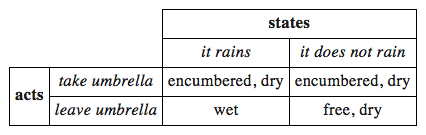
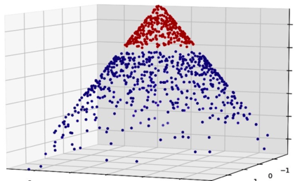
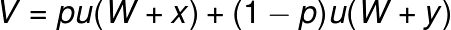
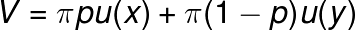
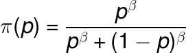
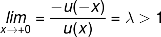

Collect data
Analyse
Choose
The choice
A decision problem
How to model a decision
What will happen if we do
What will happen if we do not
Can be as simple as
And as complex as
Assign probabilities to outcomes
Define conditionality
Define monetary outcomes
Calculate values
Develop understanding of utility of the outcome
The cognitive science model of EU
Built from experimental outcomes
To mimic behavior
Kahneman and Tversky (Kahneman, Nobel 2002)
Consider a set of gambles
Two outcomes:
- x with probability p
- y with probability 1-p
where x ≥ 0 ≥ y
Initial wealth W
Value V then
where u is some coefficient of utility
i.e. log(W)
Prospect theory disagrees, and states
where new term π
is probability weighing function
In standard Eu model π is linear
π is outlined by the function
for some β ∈ (0,1).
π(p) > p for small p
Thus lotteries exist
Extreme risk aversion
π(p) < p for p nearby 1
Large probabilities underweight
In economics π(p) = p is used
Except for lotteries and insurance
Goes up with x
Convex in losses
Concave in gains
Concave in first derivative on zero
Risk aversion when deciding likely gains
Risk seek when deciding unlikely gains
Risk seek when looking at likely losses
Risk averse when considering unlikely losses
Very much so at zero point
Quite so at negative
Slightly so probability weighting
π(p) = p
u(x) = x for positive ish x
u(x) = λx for negative ish x
First order in PT:
the lower the reference wealth
the higher the risk aversion
Second order in EU:
Risk aversion is either constant or changes
Depending on a utility function
Thus quadratic utility functions
Lead to unrealistic assumptions
Of increasing risk aversion
Subject to elasticity of risk
Indifference amount changes
The right elasticity seems well below
What financial markets suggest
Equity premium puzzle
At some value point averse investor
Will refuse any gamble
EU is still valid(although wrong)model
Fails mostly in conjuction with risk
Used in modelling preferences
Because it is simple and consistent
PT expands to multiple state decisions/gambles
At extreme continious gambles through integral functions
Once you own a product
Reluctant to sell at market value
Further product and money are processed separately
Thus separate utility curves
Status quo bias
Narrow framing
Horizon
Risk seeking (extreme outcome)
Reference point
Dynamic inconsistency
| Space | Forward |
|---|---|
| Right, Down, Page Down | Next slide |
| Left, Up, Page Up | Previous slide |
| P | Open presenter console |
| H | Toggle this help |